AUTOMATIC TRANSMISSION UNIT > REASSEMBLY |
| 1. BEARING POSITION |
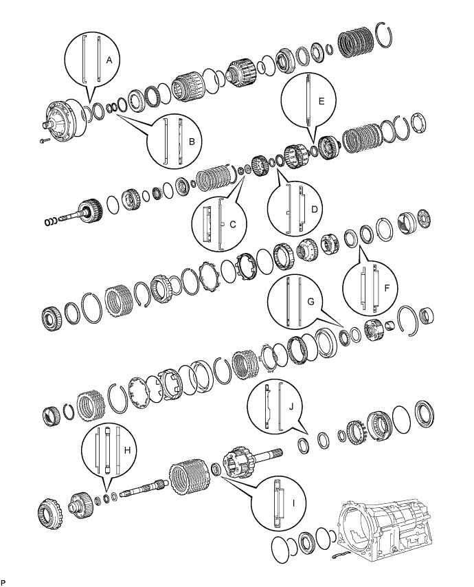
| Mark | Front Race Diameter Inside/Outside | Thrust Bearing Diameter Inside/Outside | Rear Race Diameter Inside/Outside |
| A | 74.3 to 74.6 mm (2.93 to 2.94 in.)/87.4 to 87.7 mm (3.44 to 3.45 in.) | 72.0 to 72.3 mm (2.83 to 2.85 in.)/85.3 to 85.6 mm (3.36 to 3.37 in.) | - |
| B | 37.0 to 37.3 mm (1.46 to 1.47 in.)/52.1 to 52.3 mm (2.05 to 2.06 in.) | 34.7 to 34.9 mm (1.366 to 1.374 in.)/51.6 to 51.9 mm (2.03 to 2.04 in.) | - |
| C | - | 21.4 to 21.6 mm (0.841 to 0.850 in.)/40.8 to 41.0 mm (1.606 to 1.614 in.) | 22.7 to 22.9 mm (0.892 to 0.902 in.)/60.0 to 60.4 mm (2.36 to 2.38 in.) |
| D | 33.3 to 33.5 mm (1.31 to 1.32 in.)/56.3 to 56.6 mm (2.22 to 2.23 in.) | 38.5 to 38.7 mm (1.515 to 1.524 in.)/56.5 to 57.0 mm (2.22 to 2.24 in.) | - |
| E | - | 42.6 to 42.8 mm (1.68 to 1.69 in.)/60.8 to 61.1 mm (2.39 to 2.41 in.) | - |
| F | 38.0 to 38.2 mm (1.496 to 1.504 in.)/56.5 to 57.0 mm (2.22 to 2.24 in.) | 43.4 to 43.6 mm (1.71 to 1.72 in.)/58.0 to 58.4 mm (2.28 to 2.30 in.) | - |
| G | - | 55.8 to 56.0 mm (2.197 to 2.204 in.)/76.1 to 76.4 mm (2.996 to 3.008 in.) | 53.8 to 54.0 mm (2.12 to 2.13 in.)/73.7 to 74.0 mm (2.90 to 2.91 in.) |
| H | 33.4 to 33.6 mm (1.31 to 1.32 in.)/48.7 to 49.0 mm (1.92 to 1.93 in.) | 32.2 to 32.3 mm (1.268 to 1.272 in.)/49.0 to 49.2 mm (1.93 to 1.94 in.) | 32.2 to 32.4 mm (1.27 to 1.28 in.)/48.7 to 49.0 mm (1.92 to 1.93 in.) |
| I | - | 21.5 to 21.8 mm (0.846 to 0.858 in.)/40.5 to 40.8 mm (1.59 to 1.61 in.) | - |
| J | - | 43.6 to 43.9 mm (1.72 to 1.73 in.)/60.6 to 60.9 mm (2.39 to 2.40 in.) | 47.2 to 47.4 mm (1.86 to 1.87 in.)/66.9 to 67.1 mm (2.63 to 2.64 in.) |
| 2. ASSEMBLE NO. 4 BRAKE PISTON AND BRAKE REACTION SLEEVE |
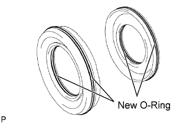 |
Coat 2 new O-rings with ATF, and install them to the brake reaction sleeve.
Coat 2 new O-rings with ATF, and install them to the No. 4 brake piston.
Install the No. 4 brake piston to the reaction sleeve.
| 3. INSTALL NO. 4 BRAKE PISTON WITH BRAKE REACTION SLEEVE |
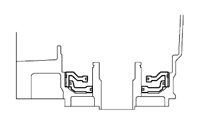 |
Install the No. 4 brake piston with brake reaction sleeve to the transmission case
| 4. INSTALL 1ST AND REVERSE BRAKE PISTON |
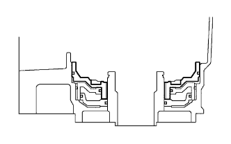 |
Coat a new O-ring with ATF.
Install the O-ring to the 1st and reverse brake piston.
With the spring seat of the piston facing upwards (the front side), place the piston in the transmission case.
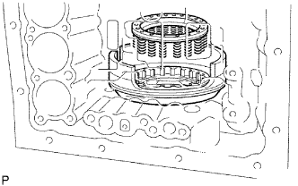 |
Place the brake return spring onto the 1st and reverse brake piston.
| 5. INSTALL 1ST AND REVERSE BRAKE RETURN SPRING SUB-ASSEMBLY |
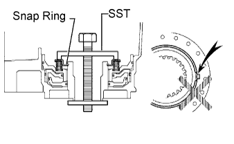 |
Place SST on a new spring retainer, and compress the return spring.
Using SST, install the snap ring.
| 6. INSTALL REAR PLANETARY GEAR ASSEMBLY |
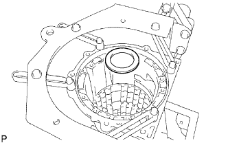 |
Install the No. 9 thrust bearing race.
| Item | Inside | Outside |
| No. 9 Race | 47.2 to 47.4 mm (1.86 to 1.87 in.) | 66.9 to 67.1 mm (2.63 to 2.64 in.) |
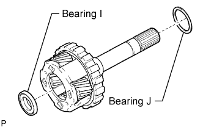 |
Coat the 2 thrust needle roller bearings with petroleum jelly, and install them to the rear planetary gear.
| Item | Inside | Outside |
| Bearing J | 43.6 to 43.9 mm (1.72 to 1.73 in.) | 60.6 to 60.9 mm (2.39 to 2.40 in.) |
| Bearing I | 21.5 to 21.8 mm (0.846 to 0.858 in.) | 40.5 to 40.8 mm (1.59 to 1.61 in.) |
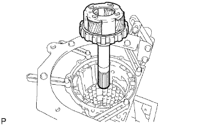 |
Install the rear planetary gear assembly.
| 7. INSPECT PACK CLEARANCE OF 1ST AND REVERSE BRAKE |
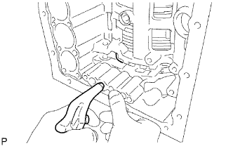 |
Make sure the 1st and reverse brake piston moves smoothly when applying and releasing compressed air into the transmission case.
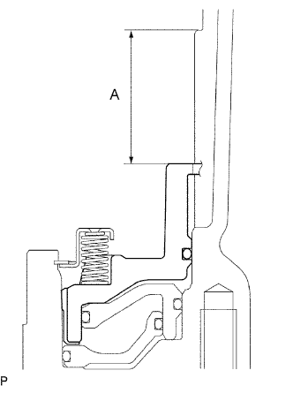 |
Using a vernier caliper, measure the level difference (length A) between the upper surface of the 1st and reverse brake piston and the hitting surface of the No. 4 brake flange at both ends across a diameter, and calculate the average.
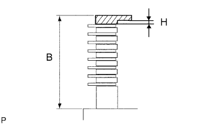 |
Using a vernier caliper, measure the thickness (length B) of the 2 brake flanges, 7 No. 4 brake plates and 8 No. 4 brake discs all together at both ends across a diameter, and calculate the average.
| No. | Thickness |
| 0 | 0 mm (0 in.) |
| 2 | 0.15 to 0.25 mm (0.00590 to 0.00984 in.) |
| 4 | 0.35 to 0.45 mm (0.0138 to 0.0177 in.) |
| 6 | 0.55 to 0.65 mm (0.0217 to 0.0256 in.) |
| 8 | 0.75 to 0.85 mm (0.0295 to 0.0335 in.) |
| 10 | 0.95 to 1.05 mm (0.0374 to 0.0413 in.) |
| 12 | 1.15 to 1.25 mm (0.0453 to 0.0492 in.) |
| 14 | 1.35 to 1.45 mm (0.0531 to 0.0571 in.) |
| 8. INSTALL NO. 4 BRAKE DISC |
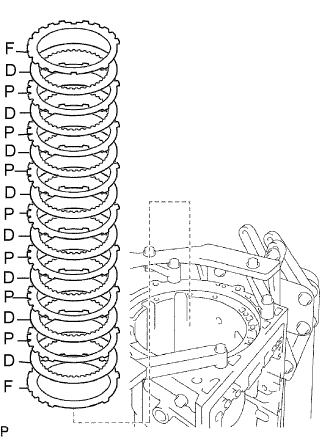 |
Install the 2 flanges, 8 discs and 7 plates.
| 9. INSTALL BRAKE PLATE STOPPER SPRING |
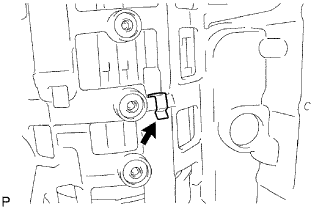 |
| 10. INSTALL REAR PLANETARY RING GEAR FLANGE SUB-ASSEMBLY |
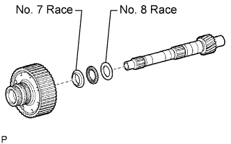 |
Install the No. 8 thrust bearing race, thrust needle roller bearing, No. 7 thrust bearing race and planetary ring gear flange to the intermediate shaft.
| Item | Inside | Outside |
| No. 7 Race | 33.4 to 33.6 mm (1.31 to 1.32 in.) | 48.7 to 49.0 mm (1.92 to 1.93 in.) |
| Bearing | 32.2 to 32.3 mm (1.268 to 1.272 in.) | 49.0 to 49.2 mm (1.93 to 1.94 in.) |
| No. 8 Race | 32.2 to 32.4 mm (1.27 to 1.28 in.) | 48.7 to 49.0 mm (1.92 to 1.93 in.) |
| 11. INSTALL NO. 3 1-WAY CLUTCH ASSEMBLY |
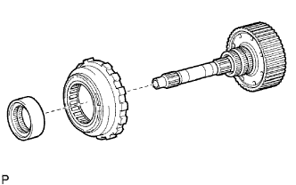 |
Install the 1-way clutch and 1-way clutch inner race to the intermediate shaft.
| 12. INSTALL INTERMEDIATE SHAFT |
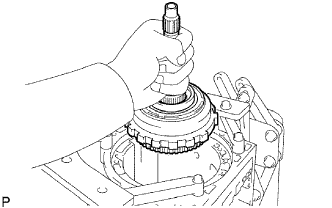 |
Install the intermediate shaft with No. 3 1-way clutch assembly to the case.
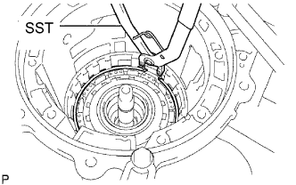 |
Using SST, install the snap ring.
| 13. INSTALL CENTER PLANETARY GEAR ASSEMBLY |
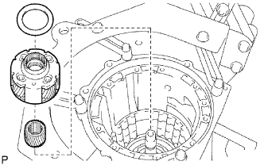 |
Install the planetary sun gear and center planetary gear to the case.
Coat the No. 6 thrust bearing race with petroleum jelly, and install it to the center planetary gear.
| Item | Inside | Outside |
| Race | 53.8 to 54.0 mm (2.12 to 2.13 in.) | 73.7 to 74.0 mm (2.90 to 2.91 in.) |
| 14. INSTALL NO. 2 BRAKE PISTON |
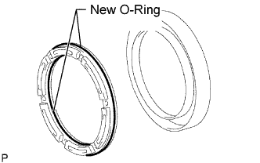 |
Coat 2 new O-rings with ATF, and install them to the brake piston.
Press the brake piston into the brake cylinder with both hands.
Install the No. 2 brake piston to the case.
| 15. INSTALL NO. 2 BRAKE DISC |
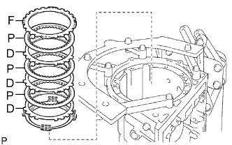 |
Install the brake piston return spring.
Install the 3 plates, 3 discs and flange.
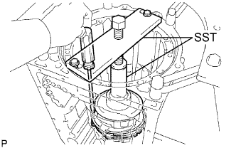 |
Using SST and a press, compress the return spring and install the No. 2 brake spring snap ring.
| 16. INSTALL NO. 1 BRAKE PISTON |
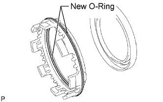 |
Coat 2 new O-rings with ATF, and install them to the brake piston.
Press the brake piston into the brake cylinder with both hands.
| 17. INSTALL BRAKE PISTON RETURN SPRING SUB-ASSEMBLY |
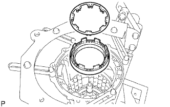 |
Install the brake piston return spring and the No. 1 brake piston with No. 1 brake cylinder to the transmission case.
| 18. INSTALL BRAKE PISTON RETURN SPRING SNAP RING |
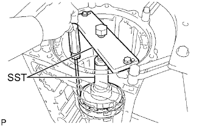 |
Using SST and a press, compress the return spring and install the brake piston return spring snap ring.
| 19. INSTALL NO. 1 BRAKE DISC |
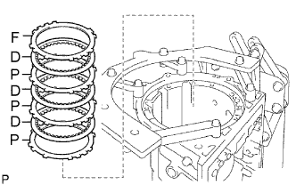 |
for 1GR-FE:
Install the 3 plates, 3 discs and flange.
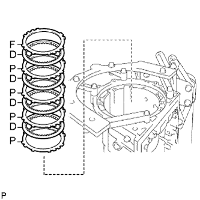 |
for 2UZ-FE:
Install the 4 plates, 4 discs and flange.
| 20. INSTALL CENTER PLANETARY RING GEAR |
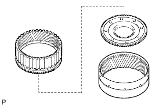 |
Install the center planetary ring gear and front planetary ring gear flange to the front planetary ring gear.
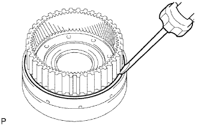 |
Using a screwdriver, install the snap ring.
| 21. INSTALL FRONT PLANETARY RING GEAR |
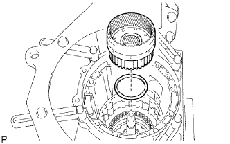 |
Install the front planetary ring gear and thrust needle roller bearing to the case.
| Item | Inside | Outside |
| Bearing | 55.8 to 56.0 mm (2.197 to 2.204 in.) | 76.1 to 76.4 mm (2.996 to 3.008 in.) |
| 22. INSTALL FRONT PLANETARY GEAR ASSEMBLY |
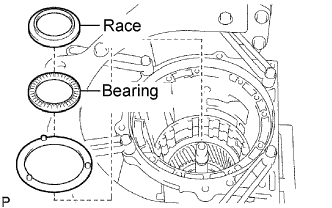 |
Install the thrust washer and thrust needle roller bearing.
Coat the No. 5 thrust race with petroleum jelly, and install it to the front planetary ring gear.
| Item | Inside | Outside |
| Bearing | 43.4 to 43.6 mm (1.71 to 1.72 in.) | 58.0 to 58.4 mm (2.28 to 2.30 in.) |
| Race | 38.0 to 38.2 mm (1.496 to 1.504 in.) | 56.5 to 57.0 mm (2.22 to 2.24 in.) |
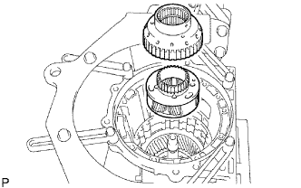 |
Install the front planetary gear assembly and 1-way clutch inner race to the case.
| 23. INSPECT PISTON STROKE OF NO. 1 BRAKE PISTON |
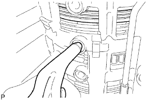 |
Make sure the No. 1 brake piston moves smoothly when applying and releasing compressed air into the transmission case.
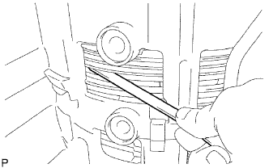 |
Using a feeler gauge, measure the B3 brake pack clearance between the snap ring and flange.
| Mark | Thickness |
| 0 | 1.95 to 2.05 mm (0.0768 to 0.0807 in.) |
| 1 | 2.15 to 2.25 mm (0.0846 to 0.0886 in.) |
| 2 | 2.35 to 2.45 mm (0.0925 to 0.0965 in.) |
| 3 | 2.55 to 2.65 mm (0.100 to 0.104 in.) |
| 24. INSTALL 2ND BRAKE PISTON |
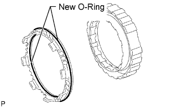 |
Coat 2 new O-rings with ATF, and install them to the 2nd brake piston.
Press the 2nd brake cylinder into the 2nd brake piston with both hands.
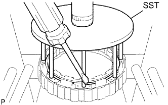 |
Using SST and a press, compress the return spring and install the snap ring.
| 25. INSTALL 2ND BRAKE CYLINDER |
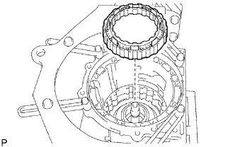 |
Install the 2nd brake cylinder to the case.
| 26. INSTALL 1-WAY CLUTCH ASSEMBLY |
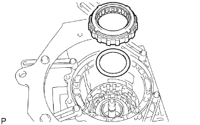 |
Install the thrust washer and 1-way clutch to the case.
| 27. INSTALL 2ND BRAKE PISTON HOLE SNAP RING |
Using SST, install the snap ring.
| 28. INSTALL NO. 3 BRAKE DISC |
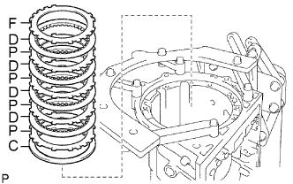 |
Install the cushion plate, 4 plates, 4 discs and flange to the case.
| 29. INSTALL NO. 3 BRAKE SNAP RING |
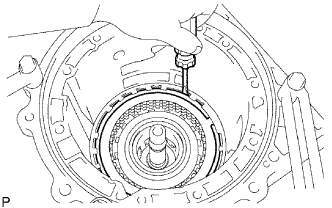 |
Using a screwdriver, install the snap ring.
| 30. INSTALL DIRECT CLUTCH PISTON SUB-ASSEMBLY |
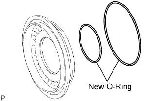 |
Coat 2 new O-rings with ATF, and install them to the direct clutch piston.
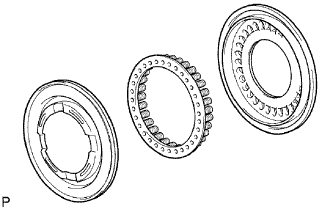 |
Install the No. 2 clutch balancer and direct clutch return spring to the direct clutch piston.
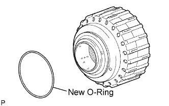 |
Coat a new O-ring with ATF, and install it to the clutch drum.
Press the direct clutch piston into the clutch drum with both hands.
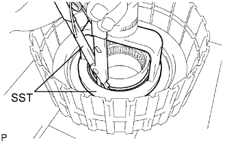 |
Place SST on the direct clutch piston, and compress the return spring with a press.
Install the snap ring with a snap ring expander.
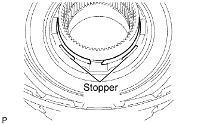 |
Set the end gap of the snap ring in the piston as shown in the illustration
| 31. INSTALL REVERSE CLUTCH PISTON SUB-ASSEMBLY |
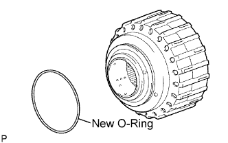 |
Coat a new O-ring with ATF, and install it to the clutch drum.
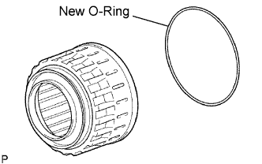 |
Coat a new O-ring with ATF, and install it to the reverse clutch piston.
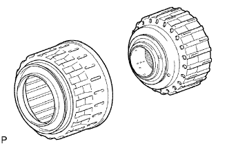 |
Press the clutch drum into the reverse clutch piston with both hands.
| 32. INSTALL REVERSE CLUTCH RETURN SPRING SUB-ASSEMBLY |
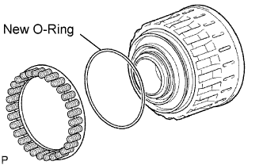 |
Coat a new O-ring with ATF, and install it to the reverse clutch piston.
Install the reverse clutch return spring to the reverse clutch piston.
| 33. INSTALL NO. 3 CLUTCH BALANCER |
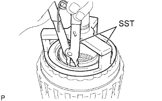 |
Place SST on the No. 3 clutch balancer, and compress the clutch balancer with a press.
Install the snap ring with a snap ring expander.
Set the end gap of the snap ring in the piston as shown in the illustration.
| 34. INSTALL DIRECT CLUTCH DISC |
for 1GR-FE:
Install the 5 plates, 5 discs and reverse clutch flange to the clutch drum.
for 2UZ-FE:
Install the 6 plates, 6 discs and reverse clutch flange to the clutch drum.
Using a screwdriver, install the 2 hole snap rings to the clutch drum.
| 35. INSPECT PACK CLEARANCE OF DIRECT CLUTCH |
Using a dial indicator, measure the moving distance (distance A) of the clutch flange at both ends across a diameter while applying air to the oil hole as shown in the illustration, and calculate the average.
| Mark | Thickness |
| 2 | 2.95 to 3.05 mm (0.116 to 0.120 in.) |
| 3 | 3.05 to 3.15 mm (0.120 to 0.124 in.) |
| 4 | 3.15 to 3.25 mm (0.124 to 0.128 in.) |
| 5 | 3.25 to 3.35 mm (0.128 to 0.132 in.) |
| 6 | 3.35 to 3.45 mm (0.132 to 0.136 in.) |
| 7 | 3.45 to 3.55 mm (0.136 to 0.140 in.) |
| 8 | 3.55 to 3.65 mm (0.140 to 0.144 in.) |
| 9 | 3.65 to 3.75 mm (0.144 to 0.148 in.) |
| A | 3.75 to 3.85 mm (0.148 to 0.152 in.) |
| 36. INSTALL REVERSE CLUTCH FLANGE |
Install the reverse clutch flange to the clutch drum.
| 37. INSTALL REVERSE CLUTCH REACTION SLEEVE |
Install the 5 reverse clutch discs, 4 clutch plates, reverse clutch flange, clutch cushion plate and reverse clutch reaction sleeve to the reverse clutch hub.
Using a screwdriver, install the hole snap ring.
| 38. INSPECT PACK CLEARANCE OF REVERSE CLUTCH |
Using a dial indicator, measure the reverse clutch piston stroke (distance A) and the moving distance (distance B) of the reverse flange at both ends across a diameter while applying air (392 kPa (4.0 kgf/cm2, 57 psi)) to the oil hole as shown in the illustration, and calculate the average.
| Mark | Thickness |
| 0 | 2.75 to 2.85 mm (0.108 to 0.112 in.) |
| 1 | 2.85 to 2.95 mm (0.112 to 0.116 in.) |
| 2 | 2.95 to 3.05 mm (0.116 to 0.120 in.) |
| 3 | 3.05 to 3.15 mm (0.120 to 0.124 in.) |
| 4 | 3.15 to 3.25 mm (0.124 to 0.128 in.) |
| 5 | 3.25 to 3.35 mm (0.128 to 0.132 in.) |
| 6 | 3.35 to 3.45 mm (0.132 to 0.136 in.) |
| 7 | 3.45 to 3.55 mm (0.136 to 0.140 in.) |
| 8 | 3.55 to 3.65 mm (0.140 to 0.144 in.) |
| 9 | 3.65 to 3.75 mm (0.144 to 0.148 in.) |
| A | 3.75 to 3.85 mm (0.148 to 0.152 in.) |
| 39. REMOVE REVERSE CLUTCH REACTION SLEEVE |
Using a screwdriver, remove the snap ring from the clutch drum.
Remove the reverse clutch reaction sleeve, clutch cushion plate, reverse clutch flange, 5 reverse clutch discs, and 4 clutch plates from the reverse clutch hub.
| 40. INSTALL FORWARD CLUTCH PISTON |
Coat 2 new O-rings with ATF, and install them to the forward clutch piston.
| 41. INSTALL NO. 1 CLUTCH BALANCER |
Coat a new O-ring with ATF and install it to the clutch balancer.
Install the clutch balancer and forward clutch return spring.
Place SST on the No. 1 clutch balancer, and compress the return spring with a press.
Install the snap ring with a snap ring expander.
Set the end gap of the snap ring in the piston as shown in the illustration.
| 42. INSTALL FORWARD MULTIPLE DISC CLUTCH DISC |
for 1GR-FE:
Install the 2 flanges, 6 discs and 5 plates to the input shaft assembly.
for 2UZ-FE:
Install the 2 flanges, 7 discs and 6 plates to the input shaft assembly.
Using a screwdriver, install the hole snap ring.
| 43. INSTALL INPUT SHAFT OIL SEAL RING |
Coat 3 new oil seal rings with ATF.
Squeeze the ends of the 3 oil seal rings together, and then install them to the starter shaft groove.
| 44. INSPECT PACK CLEARANCE OF FORWARD CLUTCH |
Using a dial indicator, measure the moving distance (distance A) of the clutch flange at both ends across a diameter while applying air to the oil hole as shown in the illustration, and calculate the average.
| Mark | Thickness |
| 0 | 2.95 to 3.05 mm (0.116 to 0.120 in.) |
| 1 | 3.05 to 3.15 mm (0.120 to 0.124 in.) |
| 2 | 3.15 to 3.25 mm (0.124 to 0.128 in.) |
| 3 | 3.25 to 3.35 mm (0.128 to 0.132 in.) |
| 4 | 3.35 to 3.45 mm (0.132 to 0.136 in.) |
| 5 | 3.45 to 3.55 mm (0.136 to 0.140 in.) |
| 6 | 3.55 to 3.65 mm (0.140 to 0.144 in.) |
| 7 | 3.65 to 3.75 mm (0.144 to 0.148 in.) |
| 8 | 3.75 to 3.85 mm (0.148 to 0.152 in.) |
| 9 | 3.85 to 3.95 mm (0.148 to 0.152 in.) |
| A | 3.95 to 4.05 mm (0.152 to 0.159 in.) |
| 45. INSTALL INPUT SHAFT ASSEMBLY |
Install the input shaft to the clutch drum.
Install the thrust needle roller bearing to the clutch drum.
| Item | Inside | Outside |
| Bearing | 21.4 to 21.6 mm (0.841 to 0.850 in.) | 40.8 to 41.0 mm (1.606 to 1.614 in.) |
| 46. INSTALL MULTIPLE DISC CLUTCH HUB |
Coat the 2 thrust bearing races with petroleum jelly, and install them onto the multiple disc clutch hub.
| Item | Inside | Outside |
| No. 3 Race | 22.7 to 22.9 mm (0.892 to 0.902 in.) | 60.0 to 60.4 mm (2.36 to 2.38 in.) |
| No. 4 Race | 33.3 to 33.5 mm (1.31 to 1.32 in.) | 56.3 to 56.6 mm (2.22 to 2.23 in.) |
Install the multiple disc clutch hub to the clutch drum.
| 47. INSTALL FORWARD CLUTCH HUB SUB-ASSEMBLY |
Coat the 2 thrust needle roller bearings with petroleum jelly, and install them to the forward clutch hub.
| Item | Inside | Outside |
| Bearing D | 38.5 to 38.7 mm (1.515 to 1.524 in.) | 56.5 to 57.0 mm (2.22 to 2.24 in.) |
| Bearing E | 42.6 to 42.8 mm (1.68 to 1.69 in.) | 60.8 to 61.1 mm (2.39 to 2.41 in.) |
Install the forward clutch hub to the clutch drum.
| 48. INSTALL REAR CLUTCH DISC |
Install the 5 discs, 4 plates, reverse clutch flange and clutch cushion plate to the reverse clutch hub.
| 49. INSTALL REVERSE CLUTCH REACTION SLEEVE |
Install the reverse clutch reaction sleeve to the reverse clutch hub.
| 50. INSTALL REVERSE CLUTCH HUB SUB-ASSEMBLY |
Install the reverse clutch hub to the clutch drum.
Using a screwdriver, install the snap ring to the clutch drum and input shaft.
| 51. INSTALL NO. 2 1-WAY CLUTCH ASSEMBLY |
Coat the No. 2 clutch drum thrust washer with petroleum jelly and install it to the clutch drum.
Install the 1-way clutch to the clutch drum.
| 52. INSTALL CLUTCH DRUM AND INPUT SHAFT ASSEMBLY |
Coat the 2 thrust needle roller bearings and clutch drum thrust washer with petroleum jelly and install them to the clutch drum and input shaft assembly.
| Item | Inside | Outside |
| Bearing A | 72.0 to 72.3 mm (2.83 to 2.85 in.) | 85.3 to 85.6 mm (3.36 to 3.37 in.) |
| Bearing A | 34.7 to 34.9 mm (1366 to 1.374 in.) | 51.6 to 51.9 mm (2.03 to 2.04 in.) |
Install the clutch drum and input shaft assembly to the transmission case.
| 53. INSTALL OIL PUMP ASSEMBLY |
Coat the No. 1 and No. 2 thrust bearing races with petroleum jelly, and install them to the front oil pump.
| Item | Inside | Outside |
| No. 1 Race | 74.3 to 74.6 mm (2.93 to 2.94 in.) | 87.4 to 87.7 mm (3.44 to 3.45 in.) |
| No. 2 Race | 37.0 to 37.3 mm (1.46 to 1.47 in.) | 52.1 to 52.3 mm (2.05 to 2.06 in.) |
Coat a new O-ring with ATF, and install it to the oil pump assembly.
Place the oil pump through the input shaft, and align the bolt holes of the oil pump assembly with the transmission case.
Hold the input shaft, and lightly press the oil pump body to slide the oil seal rings into the overdrive direct clutch drum.
Install the 10 bolts.
| 54. INSTALL MANUAL VALVE LEVER SHAFT OIL SEAL |
Using SST and hammer, tap in 2 new oil seals.
Coat the lip of the oil seals with MP grease.
| 55. INSPECT INDIVIDUAL PISTON OPERATION |
Check the operating sound while applying compressed air into the oil holes indicated in the illustration.
| 56. INSTALL MANUAL VALVE LEVER SUB-ASSEMBLY |
Install a new spacer to the manual valve lever.
Push the manual valve lever shaft through the transmission case, and install the manual valve lever to the manual valve lever shaft.
Using a hammer, tap in a new spring pin.
Align the manual valve lever indentation with the spacer hole, and stake them together with a punch.
Check that the shaft rotates smoothly.
| 57. INSTALL PARKING LOCK PAWL SHAFT |
Install the E-ring to the shaft.
Install the parking lock pawl, shaft and spring.
| 58. INSTALL PARKING LOCK ROD SUB-ASSEMBLY |
Connect the parking lock rod to the manual valve lever.
| 59. INSTALL PARKING LOCK PAWL BRACKET |
Place the parking lock pawl bracket onto the transmission case and install the 3 bolts.
Move the manual valve lever to the P position, and confirm that the planetary ring gear is correctly locked up by the lock pawl.
| 60. INSTALL C-1 ACCUMULATOR VALVE |
Coat a new O-ring with ATF, and install it to the accumulator valve.
Install the spring and accumulator valve to the hole.
| Spring | Free Length Outer Diameter | Color |
| C-1 Inner | 30.40 mm (1.20 in.) 11.40 mm (0.449 in.) | Pink |
| C-1 Outer | 48.76 mm (1.92 in.) 16.60 mm (0.654 in.) | Light green |
| 61. INSTALL C-3 ACCUMULATOR PISTON |
Coat 2 new O-rings with ATF, and install them to the piston.
Install the 2 springs and accumulator piston to the hole.
| Spring | Free Length Outer Diameter | Color |
| C-3 Inner | 44.0 mm (1.73 in.) 14.0 mm (0.551 in.) | Yellow |
| C-3 Outer | 73.35 mm (2.89 in.) 19.90 mm (0.784 in.) | Red |
| 62. INSTALL B-3 ACCUMULATOR PISTON |
Coat 2 new O-rings with ATF, and install them to the piston.
Install the spring and accumulator piston to the hole.
| Spring | Free Length Outer Diameter | Color |
| B-3 | 70.5 mm (2.78 in.) 19.7 mm (0.776 in.) | Purple |
| 63. INSTALL C-2 ACCUMULATOR PISTON |
Coat 2 new O-rings with ATF, and install them to the piston.
Install the spring and accumulator piston to the hole.
| Spring | Free Length Outer Diameter | Color |
| C-2 | 62.0 mm (2.44 in.) 15.9 mm (0.626 in.) | White |
| 64. INSTALL CHECK BALL BODY |
Install the spring and check ball body.
| 65. INSTALL BRAKE DRUM GASKET |
Install the 3 brake drum gaskets.
| 66. INSTALL TRANSMISSION CASE GASKET |
Install the 3 transmission case gaskets.
| 67. INSTALL TRANSMISSION VALVE BODY ASSEMBLY |
Insert the pin of the manual valve into the hole of the manual valve lever.
Install the transmission valve body assembly with the 19 bolts.
Install the detent spring and detent spring cover with the bolt.
| 68. INSTALL TRANSMISSION WIRE |
Install a new O-ring to the transmission wire.
Install the transmission wire harness.
Install the bolt.
Connect the 7 solenoid connectors.
Install the 2 ATF temperature sensors.
Install the 2 clamps and 2 bolts.
| Wire Harness | Color |
| No. 1 temperature sensor | Orange |
| No. 2 temperature sensor | Blue |
| 69. INSTALL VALVE BODY OIL STRAINER ASSEMBLY |
Coat a new O-ring with ATF, and install it to the valve body oil strainer assembly.
Install the oil strainer with the 4 bolts.
| 70. INSTALL TRANSMISSION OIL CLEANER MAGNET |
Install the 4 magnets.
| 71. INSTALL AUTOMATIC TRANSMISSION OIL PAN SUB-ASSEMBLY |
Install a new gasket to the oil pan.
Install the oil pan with the 20 bolts.
Install the drain plug.
| 72. INSTALL TRANSFER CASE ADAPTER RADIAL BALL BEARING |
Using SST and a press, press in the bearing until it stops.
Using a screwdriver, install the snap ring.
| 73. INSTALL TRANSMISSION CASE ADAPTER REAR OIL SEAL |
Coat the lip of a new oil seal with ATF.
Using SST and a hammer, tap in the oil seal.
| 74. INSTALL REAR ADAPTOR TRANSFER |
Clean the threads of the bolts and case.
Apply seal packing or equivalent to the transmission case adapter and 8 bolts.
Install the transmission case adapter with the 8 bolts.
| 75. INSTALL AUTOMATIC TRANSMISSION HOUSING |
Clean the threads of the bolts and case with non-residue solvent.
Install the transmission housing with the 10 bolts.
| 76. INSTALL AUTOMATIC TRANSMISSION BREATHER TUBE |
Coat a new O-ring with ATF and install it to the breather tube.
Install the breather tube with the 2 bolts.
| 77. INSTALL SPEED SENSOR |
Coat 2 new O-rings with ATF, and install them to the speed sensors.
Install the 2 speed sensors.
Install the 2 bolts.
| 78. INSTALL OIL COOLER TUBE UNION |
Coat 2 new O-rings with ATF, and install them to the 2 oil cooler tube unions.
Using a union nut wrench, install the 2 oil cooler tube unions.
| 79. INSTALL PARK/NEUTRAL POSITION SWITCH ASSEMBLY |
Install the park/neutral position switch to the manual valve lever shaft, and temporarily install the adjusting bolt.
Install a new lock washer and the nut.
Push the control shaft rearward as much as possible.
Return the control shaft lever 2 notches to the N position.
Align the neutral basic line with the switch groove as shown in the illustration, and tighten the adjusting bolt.
Using a screwdriver, bend the tabs of the lock washer.
| 80. INSTALL TRANSMISSION CONTROL SHAFT LEVER RH |
Install the control shaft lever with the washer and nut.